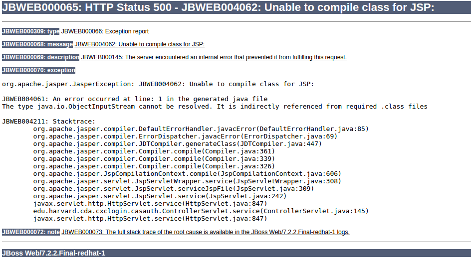

Go to the bin directory and execute script add-user.sh.
… you will then observe a new or modified file mgmt-users.properties in the standalone/configuration directory containing the username and the hashed password.
Of the timeout parameters that appear below, the following are of particular importance:
Timeout parameters
| Parameter | Description |
|---|---|
| use-try-lock | Uses tryLock() instead of lock(). This attempts to obtain the lock for the configured number of seconds, before timing out, rather than failing immediately if the lock is unavailable. Defaults to 60 seconds. As an example, to set a timeout of 5 minutes, set <use-try-lock>300</use-try-lock>. |
| blocking-timeout-millis | The maximum time, in milliseconds, to block while waiting for a connection. After this time is exceeded, an exception is thrown. This blocks only while waiting for a permit for a connection, and does not throw an exception if creating a new connection takes a long time. Defaults to 30000, which is 30 seconds. |
| idle-timeout-minutes |
The maximum time, in minutes, before an idle connection is closed. The actual maximum time depends upon the idleRemover scan time, which is half of the smallest idle-timeout-minutes of any pool.
|
| set-tx-query-timeout |
Whether to set the query timeout based on the time remaining until transaction timeout. Any configured query timeout is used if no transaction exists. Defaults to false.
|
| query-timeout | Timeout for queries, in seconds. The default is no timeout. |
| allocation-retry | The number of times to retry allocating a connection before throwing an exception. The default is 0, so an exception is thrown upon the first failure. |
| allocation-retry-wait-millis | How long, in milliseconds, to wait before retrying to allocate a connection. The default is 5000, which is 5 seconds. |
| xa-resource-timeout |
If non-zero, this value is passed to method XAResource.setTransactionTimeout.
|
All web servers provide a way to limit the maximum post size as a plausible defence against DoS attacks. In the JBoss family of servers this is usually done in the configuration of the HTTP connector using an attribute named max-post-size (or maxPostSize in some older versions).
E.g. I stumbled upon this web page that describes the configuration of the HTTP Connector FOR JBossWeb 7.0. Among the many attributes listed one finds max-post-size (a different, likely older, version of JBoss Web had this as maxPostSize). I tried both variants in JBoss EAP 6.2 and it was the max-post-size one that worked. JBoss EAP 6.2 is solid enough that if an unrecognized attribute is configured in the HTTP Connector, it helpfully explodes spectacularly during launch (rather than silently and insidiously ignoring the attribute).
Finally, setting the value of this attribute to 0 translates to no limit at all (proceed at thy own risk). E.g. in my JBoss EAP 6.2 test server I have in my standalone-full.xml file:
<subsystem xmlns="urn:jboss:domain:web:1.5" default-virtual-server="default-host" native="false">
<connector name="http" protocol="HTTP/1.1" scheme="http" socket-binding="http" max-post-size="0"/>
<virtual-server name="default-host" enable-welcome-root="true">
<alias name="localhost"/>
<alias name="example.com"/>
</virtual-server>
</subsystem>
I got a JSP compilation problem when running EAP 6.2 with a Java 8 runtime. This is what it looks like: 
The problem is treacherous as it occurs, not upon deployment of the WAR but rather when the JSP page is accessed (at which point JBoss attempts to compile it). It is further compounded by the fact that it may not show up if a compiled version of the JSP page happens to exist in JBoss cache (e.g. from a time when JBoss was run with a different, compatible, version of Java). In the latter case, to trigger the problem you will have to delete the standalone/tmp directory of JBoss.
In my environment the default Java version was 1.8 hence I had this problem. To solve the problem you need to ensure that your JBoss is launched with Java 1.7. There's two ways to accomplish this:
PATH=/some/path/jdk-1.7.0.95.Linux64/bin/:$PATH ./standalone.sh -c standalone-full.xml
$ grep -i java_home standalone.conf JAVA_HOME="/usr/lib/jvm/java-1.7.0-openjdk-amd64"
This compilation problem should not come as a total surprise as JBoss does not list Java 1.8 as a supported configuration for EAP 6.2 (see here).
As can be seen by the following table JBoss EAP 6.2 effectively does not support Java 8:
| Java Virtual Machine | Version |
|---|---|
| OpenJDK [2] | 1.6 1.7 1.8 ** support only with 6.4.1 update and above |
| Oracle JDK | 1.6 1.7 1.8 ** support only with 6.3.3 update and above |
| IBM JDK | 1.6 1.7 1.8 ** support only with 6.3.3 update and above |
| HP JDK [3] | 1.7 |
| Azul Zing JDK | 1.6 1.7 1.8 |
| Azul Zulu | 1.7 |
./jboss-cli.sh --connect command=:shutdown
{kind=link}